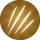

Angustia sombría
Abrir en la wiki →Ataque de monstruo. Ataque mágico. Si acierta, inflige Inmovilidad al enemigo
- Tipo
- ataque de monstruo
- Efecto
- Ataque mágico. Si acierta, inflige Inmovilidad al enemigo.

Ataque de monstruo. Ataque mágico. Si acierta, inflige Inmovilidad al enemigo